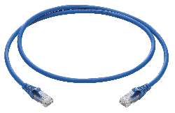

Patch Cord
Es un cable eléctrico o de fibra óptica utilizado para conectar un dispositivo electrónico a otro para el enrutamiento de señales. Se utilizan para conectar dispositivos del mismo tipo entre sí, a diferencia de los cables de bajada que conectan equipos a una red principal.
